Mobility Analysis · Bay Area · 2025
A logistic regression analysis of Bay Wheels ridership across San Francisco, San Jose, and the East Bay, comparing what drives last-mile use across three distinct city contexts.
Bay Area cities must actively integrate Bay Wheels into their public transit ecosystems through strategic pricing, infrastructure upgrades, and event-driven initiatives, transforming last-mile gaps into seamless, equitable connections for all residents.
Developed independently and shared with Lyft's public policy team twice, first for San Francisco, then expanded to San Jose and the East Bay.
Jump to recommendations →Key messages
Where Bay Wheels demand concentrates, and which stations the model flags as last-mile hubs across the three regions.
Ridership density
Kernel density of trip origins and destinations in each city. Brighter areas indicate higher concentration. The three cities have fundamentally different spatial signatures, which is why a single Bay Area strategy won't work.
Net bike flow · San Francisco
Before modeling anything, the raw trip data already shows the pattern. Net flow is just starts minus ends at each station in a given hour: blue means bikes are piling up, red means they are being taken away. At 8am bikes drain out of residential neighborhoods and accumulate at the stations ringing BART, Caltrain and the Embarcadero, the first mile of a commute. By 5pm the map inverts, and those same stations empty as riders take the last mile home.
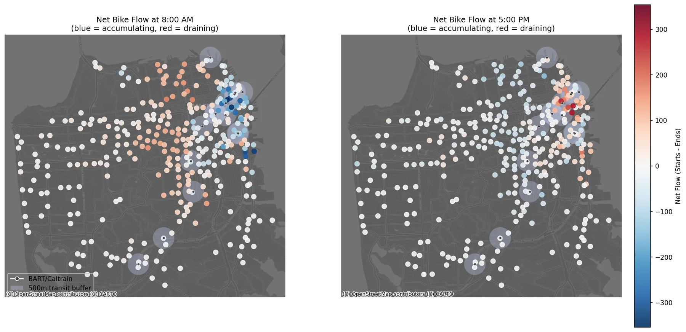
If those were simply the busiest stations in the city, they would look the same at every hour. They don't. Sampled at 11am and again at 2pm, the same map goes quiet, then begins to warm as the evening peak approaches.
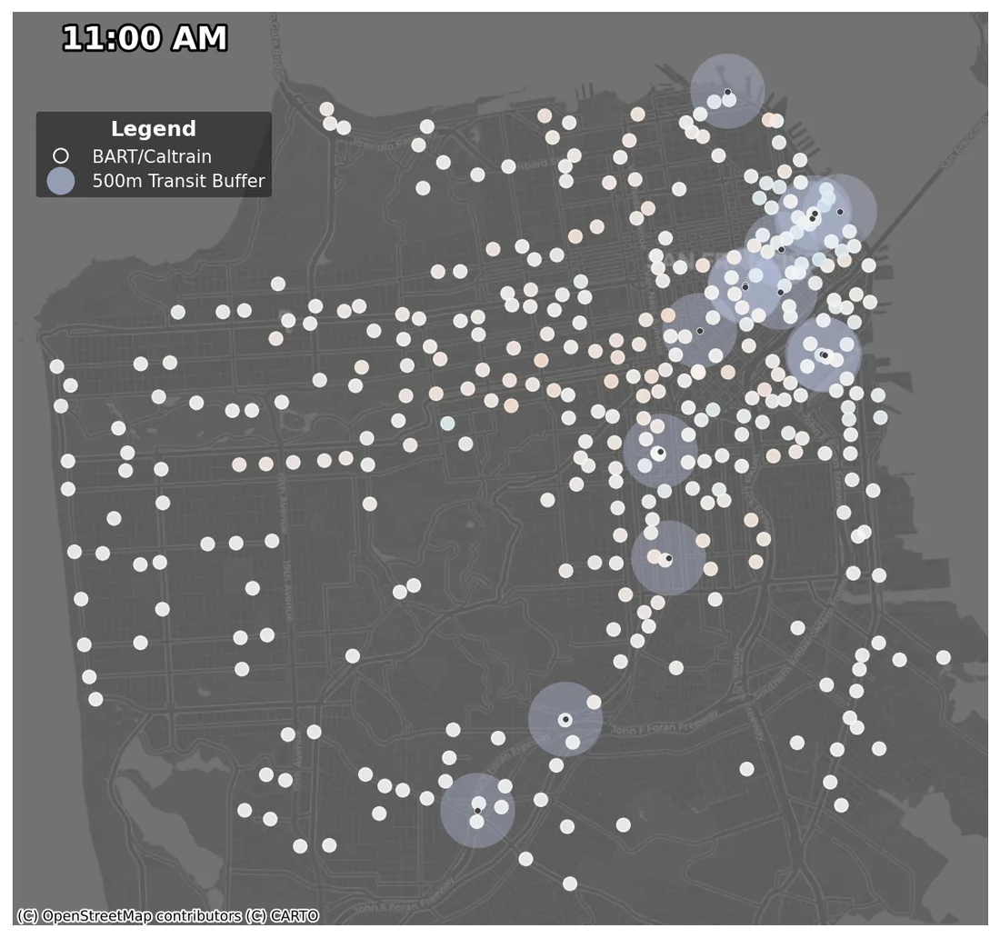
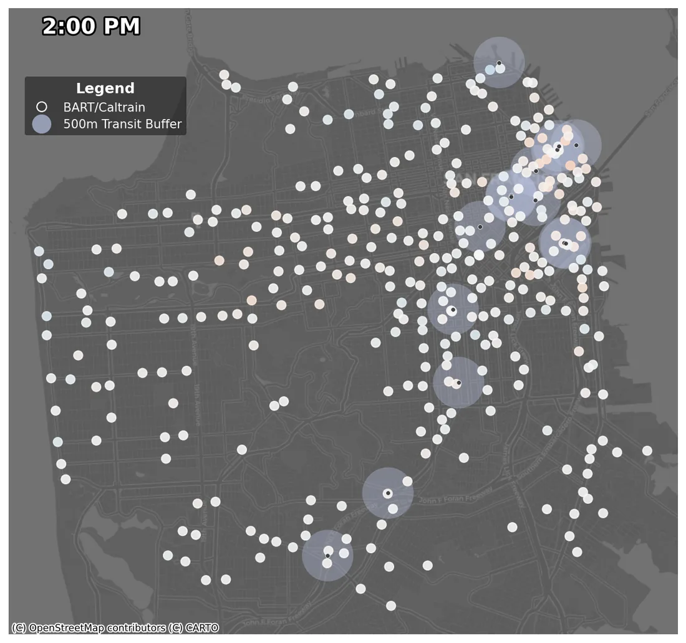
Predicted last-mile probability
Logistic regression assigns each station a predicted probability of functioning as a last-mile hub. Yellow = high probability. Purple = low. Transit stations marked with × or triangles.
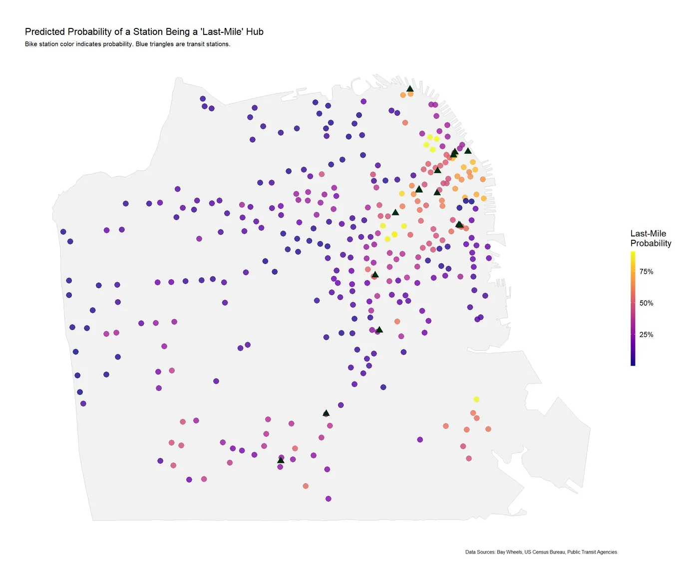
FiDi and the eastern waterfront have the highest predicted probability. More variability across non-transit stations than the other cities, SF's diffuse transit network creates more opportunity outside the core.
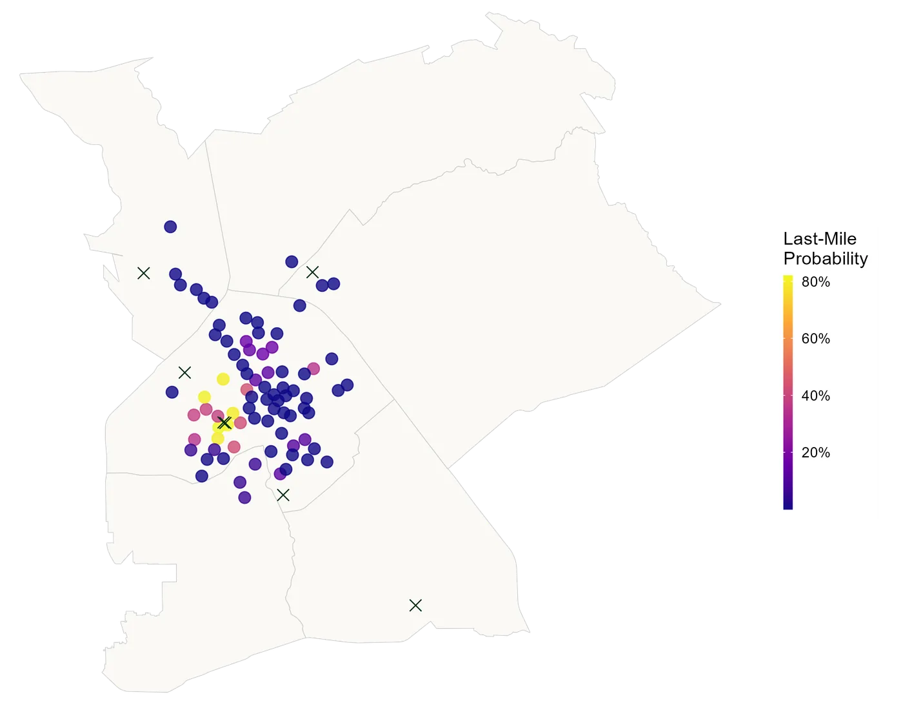
Transit or nothing. Yellow stations cluster exclusively around Diridon. The rest of the network shows near-zero probability. Any expansion not anchored to transit is unlikely to generate last-mile use.
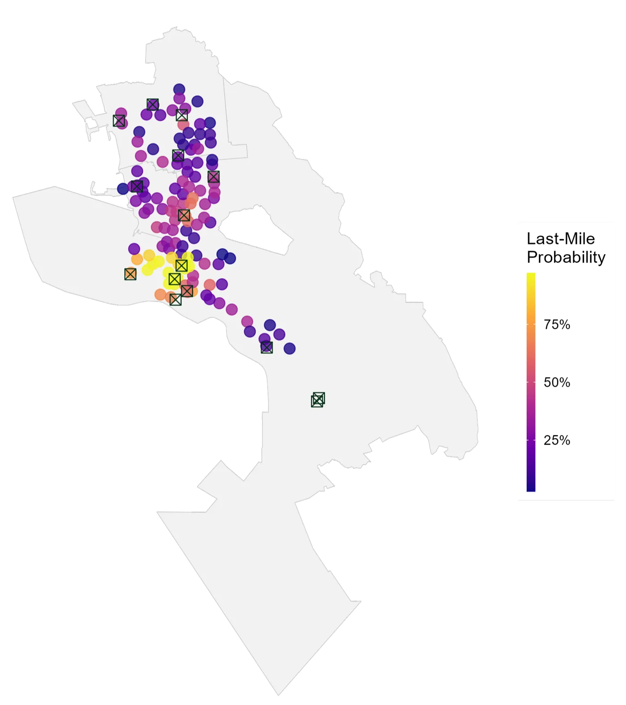
More nuance. High probability near BART, but moderate probability extends into Berkeley's slow-street corridors. Cycling culture itself is a predictor here, not just transit proximity.
Each city tells a different story, so a single Bay Area strategy won't work. Here's what drives last-mile use in San Francisco, San Jose, and the East Bay.
San Francisco · May 2025
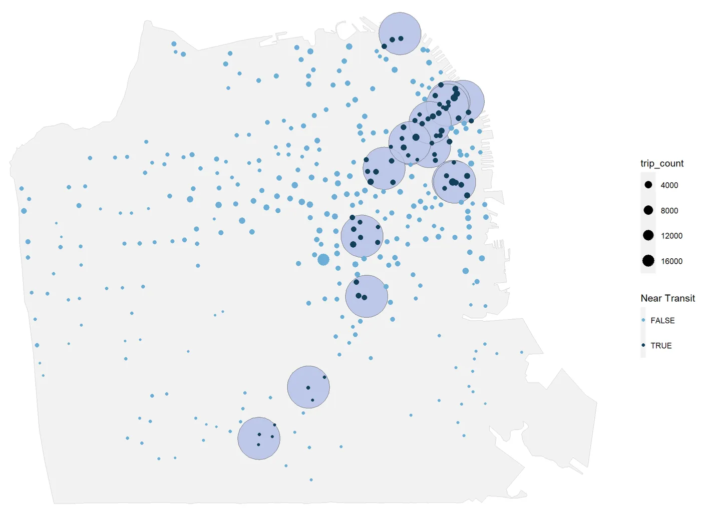
Dark dots mark stations within 500m of BART or Caltrain; bubble size scales with trip volume. The heaviest bubbles cluster tightly in the FiDi core and along the eastern waterfront, where near-transit stations carry the bulk of last-mile demand.
Away from that core the picture loosens. SF's diffuse network means its non-transit stations show far more variety in use than San Jose's or the East Bay's, more opportunity outside downtown, but also less predictability.
SF is also the only city where precipitation and wind speed were significant predictors in the regression model, suggesting weather-responsive rebalancing would have the highest ROI here.
Bundled MUNI/BART + Bay Wheels pricing. Event valets at Outside Lands and Pride to build casual-to-member conversion at scale.
San Jose · Sep 2024
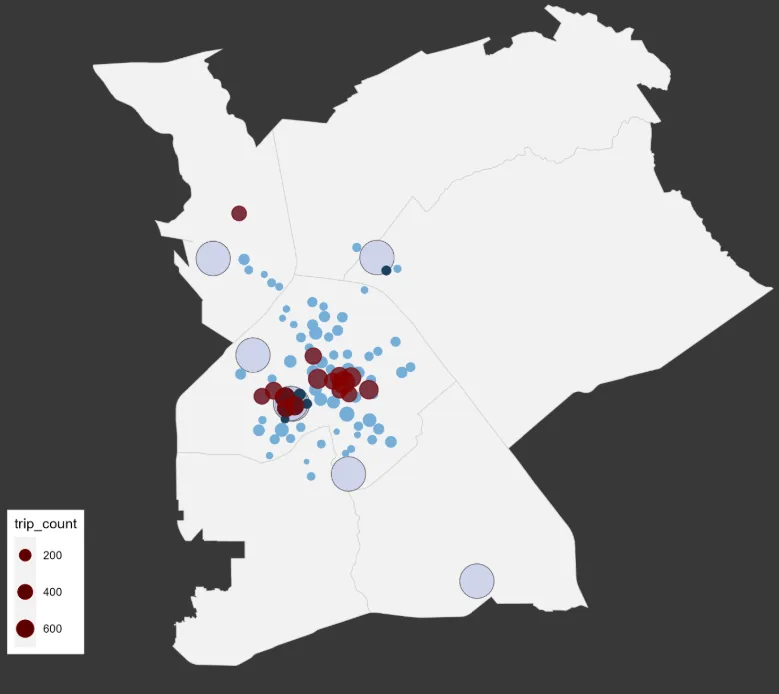
Sunday is San Jose's busiest day, the opposite of SF's Thursday peak. Weekday ridership peaks at ~6pm only, with minimal morning spike, suggesting a different rider profile.
Proximity to parks and universities did not predict last-mile use in San Jose. Recreational and student demand requires a separate product strategy from commuter demand.
Subsidized Clipper rates covering VTA + Bay Wheels. Trail integration along Guadalupe River and the Silicon Valley bike superhighway (now state-funded). Pop-up stations at Viva Calle, highest-usage day in Sep 2024 was Sep 8.
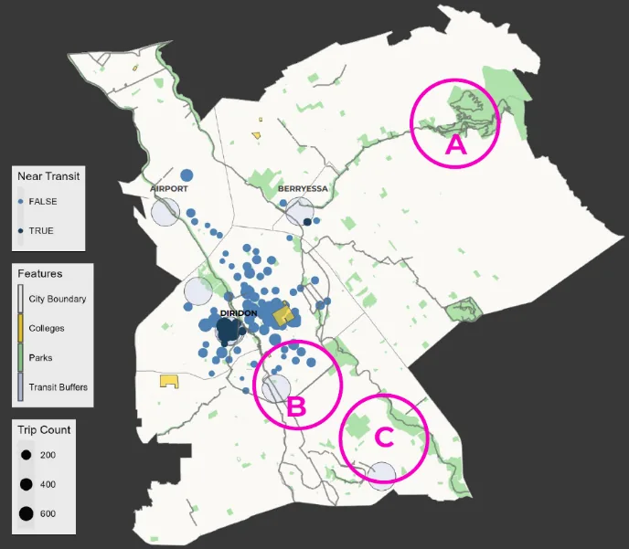
East Bay · Sep 2024
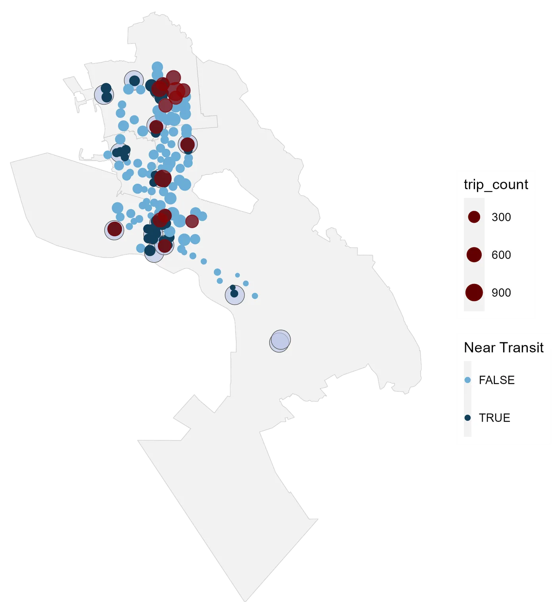
Monday is East Bay's busiest day. Weekday peaks at 6pm then 8am, a more balanced commuter profile than San Jose's single evening peak.
The most popular stations cluster near BART and UC Berkeley. East Bay's slow-street corridors and protected lanes create moderate last-mile probability even away from transit, a pattern unique to this city.
Casual riders drive last-mile use in East Bay more than in other cities, suggesting community cycling events are more effective tools here than commuter-focused pricing.
Clipper incentives for e-bike BART transfers. Pop-up stations at East Bay Bike Party. Expand stations along Berkeley's slow-street corridors to capture non-transit last-mile demand.
Beyond geography: when people ride, how weather shapes demand, and how the three cities stack up once you account for transit access.
Temporal patterns
Two views of the same San Jose data: the top splits ridership by individual day of the week, the bottom groups it into weekday versus weekend. Together they show demand that is afternoon-led and weighted toward weekends.
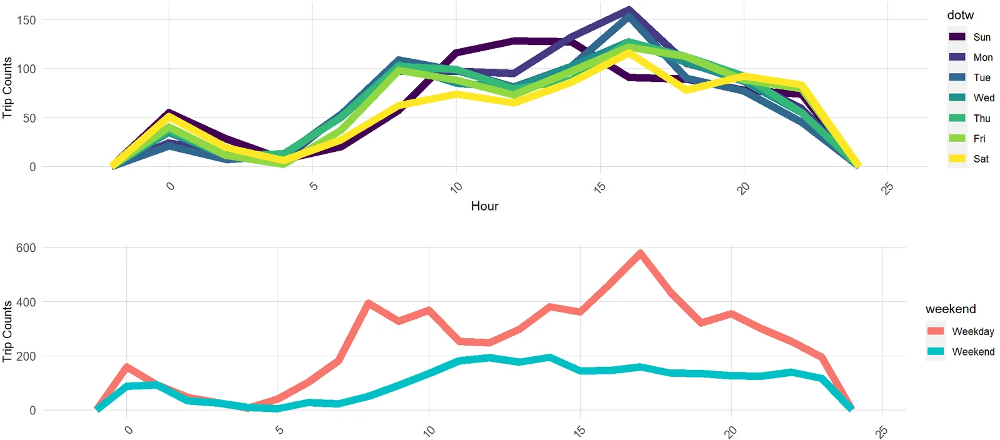
Weather and ridership
San Francisco is the one city where weather actually mattered. Stacking conditions against hourly ridership shows why precipitation and wind both registered as significant predictors here.
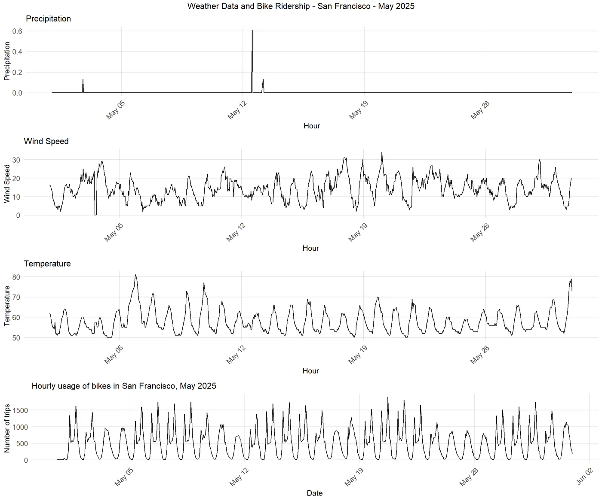
Comparison across three cities
Box plots show how predicted last-mile probability distributes across stations, split by proximity to transit. East Bay consistently outperforms at non-transit stations, confirming the cycling-culture effect.
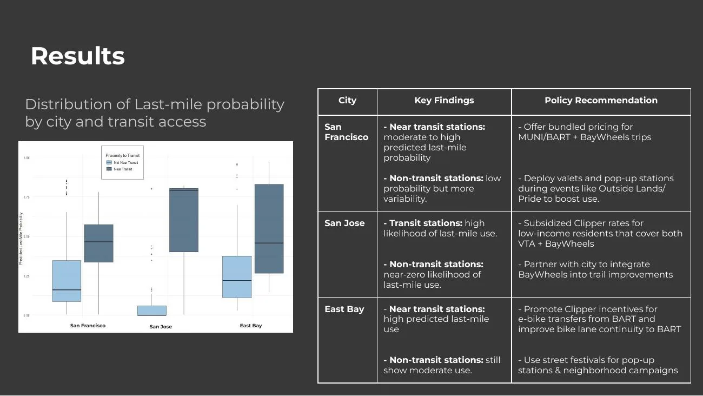
What the findings mean in practice: tailored recommendations for each city, and where the analysis points next.
Three cities, three strategies
Potential next steps
Data and methods
Regression model
Binomial logistic regression predicting whether a bike station functions as a last-mile hub (trip distance under 1.5 miles ending near transit). Run separately for each city given different data periods and local variables. Because that outcome is a constructed label, it was checked against an independent measure first: hourly net flow, starts minus ends per station, which shows the same transit-oriented pattern in the raw data without any modeling assumptions.
| Predictor | Category | Included in | Effect on last-mile probability |
|---|---|---|---|
| % public transit commuters in census tract | Census | All cities | Strongest positive predictor across all models |
| Member vs casual rider | Bike | All cities | Members higher in SF and EB; casual higher in SJ |
| Classic vs electric bike | Bike | All cities | Classic bikes strongly associated with last-mile trips |
| Hour of day | Bike | All cities | Peak commute hours (8am, 6pm) increase probability |
| Temperature | Weather | All cities | Mild temperatures increase probability |
| Wind speed and precipitation | Weather | SF only | Both reduce probability significantly in SF |
| Station within 500m of transit | Transit | All cities | Strong positive effect, especially in San Jose |
| % White population in census tract | Census | All cities | Positive correlation; equity gap across all cities |
| Median income | Census | All cities | Moderate positive effect |
| Proximity to parks | Environment | SJ only | Not a significant predictor in San Jose |
| Proximity to universities | Environment | SJ only | Not a significant predictor in San Jose |